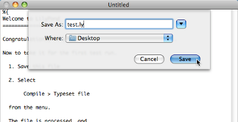

MacOS X
Note: LilyPond は テキスト ベース の楽譜作成プログラムです。グラフィカルな楽譜編集プログラムよりも、むしろプログラミング言語に似ています。LilyPond をダウンロードする前に、テキスト入力 を読んでください。
パッケージ
ダウンロード
-
 MacOS X x86: LilyPond 2.18.2-1
Intel CPU の MacOS X 10.4 以上用 (迷っているのなら、こちらを使ってください)
MacOS X x86: LilyPond 2.18.2-1
Intel CPU の MacOS X 10.4 以上用 (迷っているのなら、こちらを使ってください)
-
MacOS X PPC: LilyPond 2.18.2-1
G3 と G4 CPU の MacOS X 10.4 以上用 (古い Apple コンピュータ)
インストール
ダウンロードしたファイルをダブルクリックして、それをお好みの場所にドラッグしてください。
アンインストール
LilyPond.app フォルダを削除してください。
コマンドラインから実行する
Note: GUI 環境の方を好むのであれば、以下の説明は無視してください。
MacOS X のコマンドライン
lilypond スクリプトを実行する最も簡便な方法は、あなた自身の “ヘルパー” スクリプトをセットすることです。
-
スクリプトを保存するためのディレクトリを作成します:
mkdir -p ~/bin cd ~/bin
-
以下の内容を持つ
lilypondというファイルを作成します:#!/bin/bash exec DIR/LilyPond.app/Contents/Resources/bin/lilypond "$@"
Note: DIR は、一般には
/Applications/です。 -
bin/lilypondをbin/convert-ly(あるいは他のプログラム名) に置き換えて、lilypond-book,convert-ly, それに他の使いたいスクリプトのファイルを同じように作成します。 -
ファイルを実行可能にします:
chmod u+x lilypond
-
さらに、このディレクトリをパスに加えます。ホーム ディレクトリの中にある
.profileというファイルを変更 (あるいは作成) して、以下のような内容を持たせます:export PATH=$PATH:~/bin
このファイルは、空の行で終わっていなければなりません。
個々のスクリプトを呼び出す
スクリプト
– lilypond-book, convert-ly, abc2ly,
それに lilypond 自体も
– は、MacOS X 用の .app ファイルの中に含まれています。
さらに、スクリプトを直接呼び出すことによって、コマンドラインから実行することができます:
path/to/LilyPond.app/Contents/Resources/bin/lilypond
そのディレクトリの中にある他のすべてのスクリプト
– lilypond-book や convert-ly など
– についても同じことが言えます。
ファイルをコンパイルする
Note: 以下の説明は、あなたが LilyPond アプリケーションを使用していると仮定しています。 より簡単な編集手段 で記述されているプログラムを使用している場合、ファイルのコンパイルで何か問題に遭遇した時はそのプログラムのドキュメントを調べてください。
ステップ 1. ‘.ly’ ファイルを作成する
LilyPond.app をダブルクリックして、見本のファイルを開きます。

画面の左上に表示されているメニューから File > Save を選択します。

ファイル名を決めます。例えば ‘test.ly’ とします。
ステップ 2. コンパイルする (LilyPad を使用します)
同じメニューから Compile > Typeset を選択します。

新たにウィンドウが開き、先ほど保存したファイルのコンパイル進捗ログを表示します。

ステップ 3. 出力を閲覧する
コンパイルが終了すると、元のファイルと同じ名前の PDF ファイルが作成され、自動的にデフォルトの PDF ビューアで表示されます。

その他のコマンド
LilyPond 用に新しくファイルを作成するには、File > New
を選択します。

あるいは、File > Open を選択し、既存のファイルを開いて編集します。

Compile > Typeset を行う前にあなたが新たに行った編集を保存する必要があります。PDF ファイルが表示されない場合は、進捗ログのウィンドウでエラーをチェックしてください。
Mac OS に付属されているデフォルトの Preview PDF ビューアを使用していない場合、以前のコンパイルで生成された PDF ファイルを開いていると、その後に実行するコンパイルは更新された PDF を生成するのに失敗する可能性があります。その時は、元の PDF ファイルを閉じてください。
法律用語
すべてのロゴと商品イメージには著作権があり、商標登録されています。
The “X image” is not a registered trademark. It was created by Nihonjoe and CyberSkull, and placed under the GNU Free Documentation License version 1.2 or later. We found the image on this Wikimedia Commons page.
{kind=link}
他の言語: English, català, česky, deutsch, español, français, magyar, italiano, nederlands, 中文
About automatic language selection.